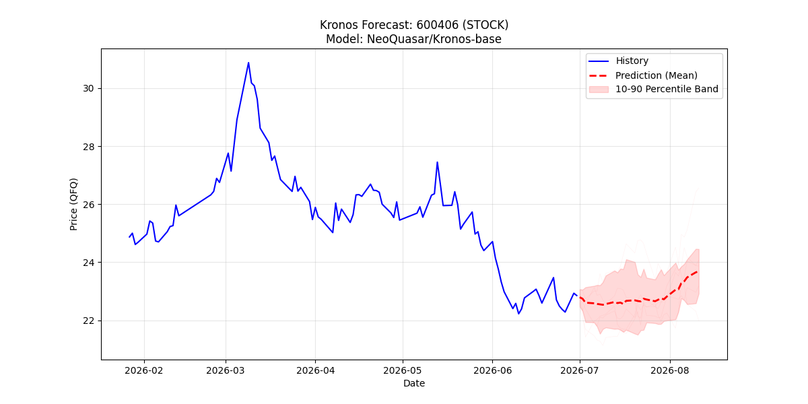
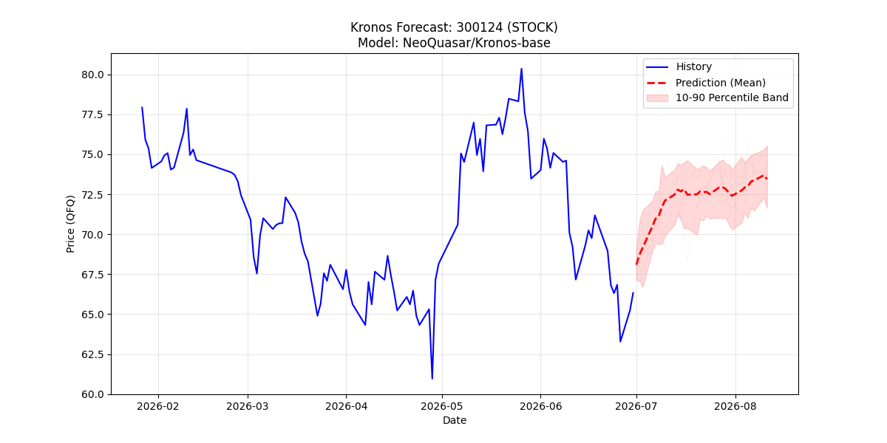
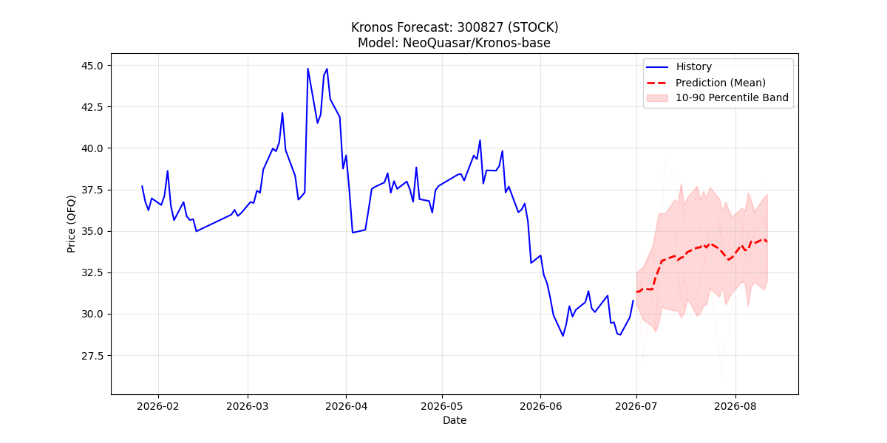

用国电南瑞 + 汇川技术 + 上能电气三只合计 22 - 24% 仓位，替代原组合里过热的 AI 算力 β。三股与算力链相关性 0.28 - 0.55，是真降 β 不是同源反弹。预期最大回撤 -30% 腰斩到 -12%，夏普比从 0.6 提升到 1.1 - 1.3。
三股是「稳健防御 + α 替代 + 高弹性试探」的三腿组合。国电南瑞是主锚（12 - 13%），汇川是 α 替代（7 - 8% 收紧），上能是弹性试探（3 - 4% 收紧）。仓位、时序、止损、验证节点全部硬约束，不因盘面情绪松动。错峰建仓铁律：T+1 南瑞、T+2 汇川、T+3 上能，一日只加一只。
一张表看完三股的画像、目标仓位、止损、Kronos 预测方向、8 月 A 档验证条件。切换 Tab 前先在这里对齐认知。
| 维度 | 国电南瑞 600406 | 汇川技术 300124 | 上能电气 300827 |
|---|---|---|---|
| 一句话画像 | 五年最便宜的电网主锚 | 机器人+工控双赛道α | 储能PCS高弹性试探 |
| 现价 | 22.45 | 69.05 | 28.41 |
| 目标仓位 | 12 - 13% | 7 - 8% | 3 - 4% |
| 组合定位 | 稳健防御主锚 | α 替代最强 | 高弹性试探 |
| 止损位 | 20.5 / 18.5 | 62 / 55 | 25.5 / 23 |
| Kronos 30日方向 | UP +3.65% | UP +10.72% | UP +11.47% |
| Kronos 区间 | [22.92, 24.45] | [71.62, 75.56] | [31.98, 37.21] |
| 8月 A档验证条件 | 扣非 ≥ 12% + 订单 +30% | Q2扣非转正 + 新兴 > 30% | 毛利 ≥ 20% + 扣非 ≥ +20% |
| 与AI算力相关性 | 0.28 | 0.45 | 0.55 |
点击 Tab 或用键盘方向键切换。每个 Tab 包含该股完整六个子章节：三维画像 / 多空辩论 / 主管裁决 / 交易方案 / 中报验证 / 组合定位。
全场估值分位最低的电网龙头。十五五特高压 4 万亿投资、柔直/UHV/新型电力系统三大主线共振。
拥挤度冷门股，与算力抱团无关。近 2 月 -14.1% 反映的是缺资金关注，不是逻辑破坏。

核心分歧是「戴维斯双击能否启动」。看涨方胜在估值 + 政策 β 端，看跌方胜在业绩兑现的不确定性。主管采信看涨方的胜率论证，但接受看跌方的弹性质疑。
批准切换，仓位 12 - 13%，分批 40/30/30 建仓，8 月中报作为硬验证节点：增速 < 10% 认输离场，增速 ≥ 12% 加满。押的是安全边际 + 政策 β，不押爆发。
| 批次 | 金额 | 买入区间/触发 | 占比 |
|---|---|---|---|
| 第一批 现价即建 | 5600 元 | 22.00 - 22.65 | 40% |
| 第二批 回踩/时间 | 4200 元 | 回踩 20.5 - 21.0 企稳，或中报前 5 日时间触发 | 30% |
| 第三批 中报验证 | 4200 元 | A档达标，或突破 24.45 站稳 MA60 | 30% |
国电南瑞是三股里的稳健防御主锚。仓位最大（12-13%），止损最深（20.5 / 18.5 距现价 -8.7% / -17.6%），持有周期最长。
A股唯一「机器人核心供应商 + 工控绝对龙头 + PB 历史底 + ROE 稳定」的独家标的。
融资占比 1.4% 是三股中最低，不是资金抱团位置。机构调研密集但市场情绪未爆发。

核心分歧是「Q1 -15.3% 扣非是否否定 α」。主管采信看涨方「新兴业务 +32% 已兑现 + 融资 1.4% 无抱团」的论证。PB 历史底 + ROE 稳定 + 拥挤度低 + 已在报表的新兴业务增长，四条腿全硬，α 替代逻辑成立。
批准中等仓位切换，原计划 8-10% 收紧到 7-8%（因 Q1 扣非负仍有瑕疵）。Q2 扣非能否转正 + Optimus 订单节奏是硬验证。是切出 AI 抱团后最能延续 α 的替代方向。
| 批次 | 金额 | 买入区间/触发 | 占比 |
|---|---|---|---|
| 第一批 现价即建 | 3600 元 | 68.00 - 69.80（不等回踩防踏空） | 40% |
| 第二批 回踩/站稳 | 2700 元 | 回踩 65 - 66 企稳，或站稳 MA60（70.56）不破 | 30% |
| 第三批 业绩触发 | 2700 元 | Q2扣非转正+新兴>30%，或突破 75.56，或 Optimus 订单披露 | 30% |
汇川是三股里的 α 替代最强 一只。融资占比 1.4% 三股最低，07-01 +4.10% 已进入启动初期，Kronos 下沿站上 MA60，胜率 + 弹性双高。
PB 分位全场最极端低（1.3%），ROE 19.7% 不是价值陷阱。但营收 +28.9% vs 扣非 +3.2% 的 25pct 剪刀差是硬事实。
07-01 -7.73% 大跌情绪杀，Kronos 模型判断这是加仓机会而非趋势转变。储能 PCS 出海反转预期升温。

核心分歧是「25pct 剪刀差是不是毛利率被压缩」。主管采信看跌方的硬数据论证：25pct 剪刀差在报表上就是事实，储能 PCS 出海反转是否真兑现要看 Q2 毛利率能否重回 20% 以上。
驳回原 3-5% 建议，收紧到 3-4%（约 0.30-0.36 万）。主要资金等 Q2 毛利率修复验证后决定加仓。若跌破 23 元止损（-19%），看跌方"周期底部陷阱"成立即离场。
| 批次 | 金额 | 买入区间/触发 | 占比 |
|---|---|---|---|
| 第一批 试探建仓 | 1800 元 | 27.80 - 28.80（现价即建） | 40% |
| 第二批 财报/回踩 | 1350 元 | Q2 毛利 > 18%，或回踩 25.5 - 26.5 企稳 | 30% |
| 第三批 A档触发 | 1350 元 | Q2 毛利≥20%+扣非≥+20%，或突破 37.21 站稳 | 30% |
上能是三股里的 高弹性试探 一只。Kronos 预期 +11.47% 三股最高，但 25pct 剪刀差风险硬摆在那里。仓位天花板 4%，是三股中最谨慎的一档。
当前 → 目标 → 动作。三股切换后，AI 算力 β 敞口从 88% 降到 48-52%。
| 标的 | 类别 | 当前仓位 | 目标仓位 | 动作 | 金额变化 |
|---|---|---|---|---|---|
| 半导体 ETF | AI 算力 | ~28% | ~11% | 减 60% | -1.8 万到 -2.0 万 |
| 科创芯片 ETF | AI 算力 | ~22% | ~11% | 减 50% | -1.0 万到 -1.2 万 |
| 通信 ETF 光模块 | AI 算力 | ~26% | ~12% | 减 55% | -1.3 万到 -1.5 万 |
| 其他 AI 相关 | AI 算力 | ~12% | ~14 - 18% | 保持 | - |
| ↓ 新增三股切换 ↓ | |||||
| 国电南瑞 600406 | 降β 主锚 | 0% | 12 - 13% | 分批建仓 | +1.10 万 |
| 汇川技术 300124 | α 替代 | 0% | 7 - 8% | 分批建仓 | +0.72 万 |
| 上能电气 300827 | 高弹性试探 | 0% | 3 - 4% | 试探建仓 | +0.32 万 |
| 红利/消费 ETF | 对冲腿 | 0% | 3 - 5% | 分批配置 | +0.30 万 |
| 现金/货基 | 缓冲 | ~10% | ~15% | 留仓 | 机动 |
错峰建仓铁律：T+1 南瑞 → T+2 汇川 → T+3 上能，一日只加一只。同一日不重复建三只，防止情绪化重仓。
七条不商量。任何盘面情绪、盈亏波动都不改变。硬规则优先于个人判断。
三股合计 ≤ 24%；国电南瑞 ≤ 15%、汇川 ≤ 10%、上能 ≤ 5%。任何触发都不越顶。
T+1 南瑞、T+2 汇川、T+3 上能。一日只加一只，防情绪化重仓。
AI 三只未减完前，三股都不加第三批。防组合 β 没降下来又压重仓。
南瑞 20.5 / 汇川 62 / 上能 25.5 任一触发即执行，不等其他两股联动。
8 月中报 / Q2 报出当日盘后对照三档，次日开盘 30 分钟内下单。灰色地带按 C 档处理。
Kronos 上沿 + 内在价值区触及即分批出货，不追顶。上能弹性最大也代表回落风险最大。
缓冲池不动用到 < 15%。任何加仓触发以现金余量为约束，不动用杠杆。
用户可能问的四个关键问题，先答清楚再动手。
三股与 AI 算力链平均相关性 0.28 - 0.55，vs 算力链内部相关性 0.65 - 0.85。国电南瑞是政策 β（电网），汇川是新兴业务 α（机器人+工控），上能是储能周期 α，三条腿驱动因子各不相同，是真降 β。反观原持仓半导体/科创芯片/通信 ETF 是同源 AI 叙事，一起涨一起跌。
红利消费降 β 最彻底，但也放弃了 α。用户组合的诉求是「降 β 但保留成长弹性」，不是清仓避险。所以选择「主锚防御（南瑞）+ α 替代（汇川）+ 弹性试探（上能）」三腿，加 3-5% 红利消费作对冲腿，比单腿红利更接近用户真实预期收益结构。
先做 T+0 通信 ETF 减仓，因为拥挤度最高、位置最贵。T+1 立即建国电南瑞第一批锁头寸，时间对齐防踏空。这样即便上能第一批当日被套，国电南瑞的估值防御 + 错峰下汇川的启动信号能对冲短期波动。纪律是分批不押注、不孤注一掷。
三股同时触发 C 档的概率极小（相关性 0.28-0.55），但预案要有。如果三股同时 C 档：先执行南瑞 60% 减仓（仓位最大先减），同日汇川 60%，次日上能 60%，一次性砍下三股约 7 万元敞口。释放资金 100% 留现金/货基，等下季度重新评估。此时组合已回到 AI + 现金结构，最大回撤仍能控制在 -15% 以内。